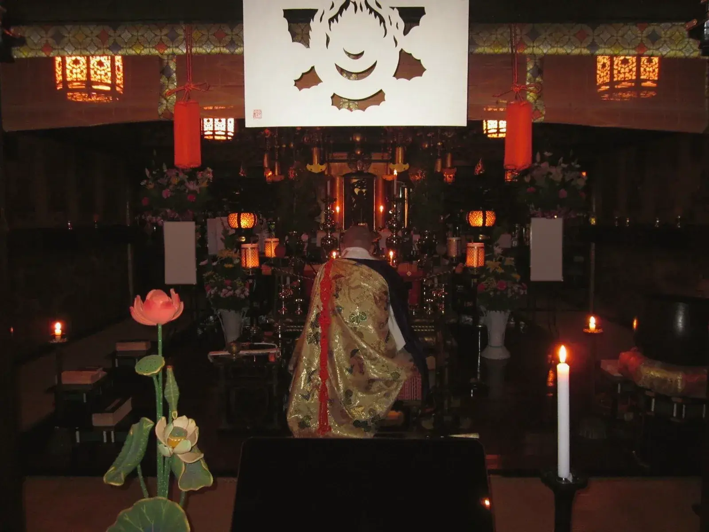
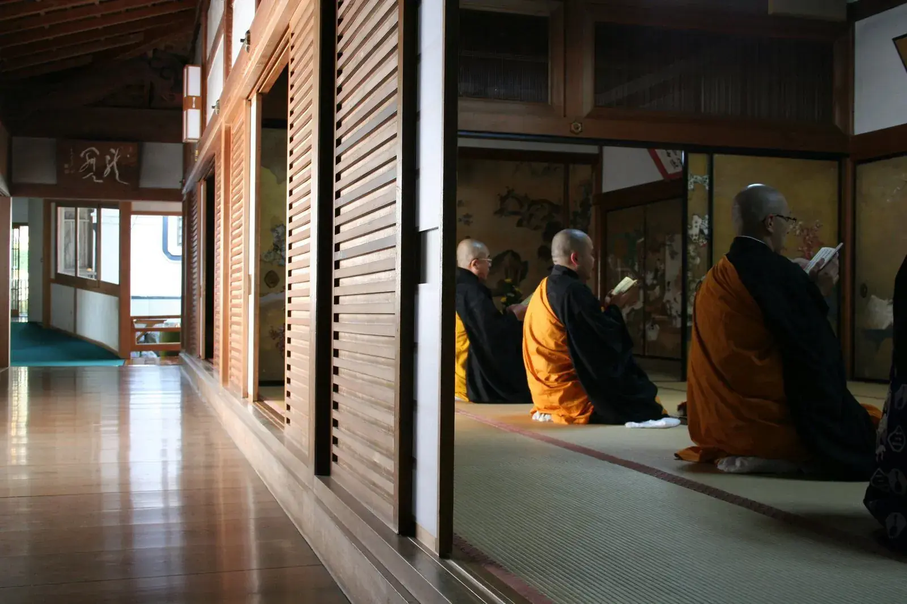
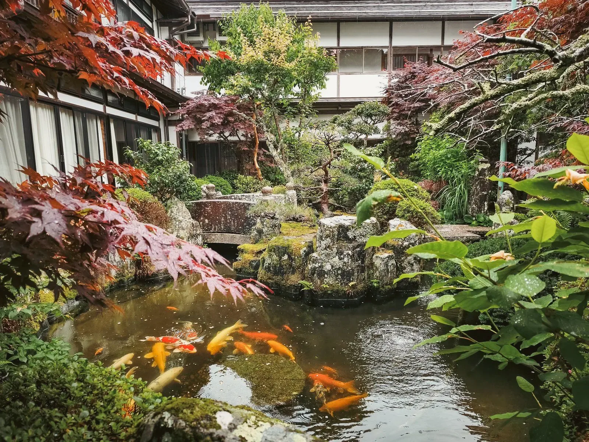
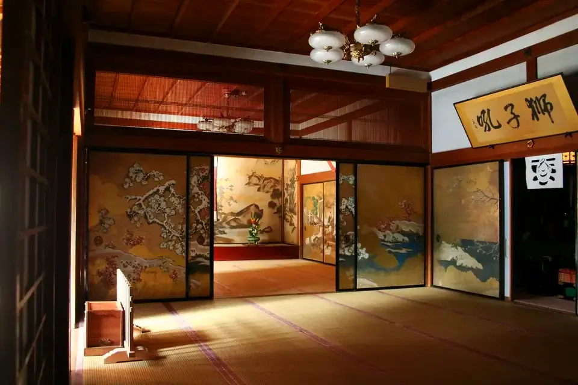
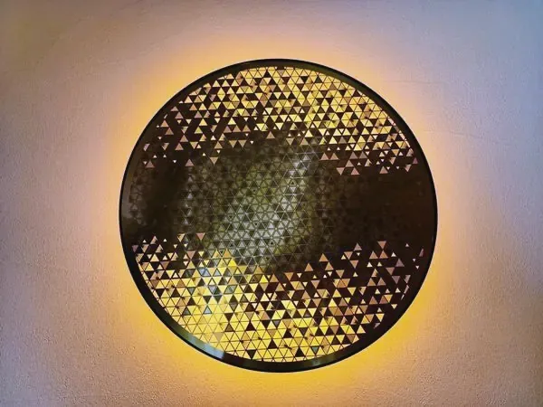

250年を超える
江戸の芸術
本堂天井には250年前の絵師による極彩色の天井絵が残り、大広間には狩野派の貴重な障壁画をご覧いただけます。


ご宿泊・ご祈祷のご予約を受け付けております。予約サイトまたはお電話でどうぞ。
高野山真言宗 総本山金剛峯寺の塔頭寺院、別格本山です。智証大師作の不動明王像をご本尊に、
建久年間（一一九〇1190年）の創建以来の歴史を伝えます。
本覚院が建つのは、弘法大師がこの地で祈られていたとき、六地蔵菩薩（六体のお地蔵さま）が現れるのを感じとられた、という言い伝えの残る場所です。

千二百年、
祈りの絶えない山で。
奥の院では、いまも毎日二度、
お大師さまへお食事が運ばれています。
本覚院は、その高野山の真ん中にあります。
本堂天井には250年前の絵師による極彩色の天井絵が残り、大広間には狩野派の貴重な障壁画をご覧いただけます。

昭和の名作庭家・重森三玲による石庭を含む5つの庭園。季節ごとに表情を変える苔と岩の世界をお楽しみください。

毎朝、本堂で副住職をはじめ僧侶がお勤めをいたします。どなたでもご参加いただけ、高野山に受け継がれる読経の響きに包まれるひとときをお過ごしいただけます。

金剛峯寺で行われる法要と同じく、前讃から各種のお経、後讃までをおつとめし、最後にご法楽として般若心経とご真言を参列の皆さまとご一緒にお唱えします。所要はおよそ1時間です。

お位牌を建立し、本堂で勤行したのち、位牌堂にて永代におまつりいたします。毎朝、お仏飯とお茶をお供えし、お燈明をあげてお参りしております。



当山は深い自然に囲まれており、近隣では野生動物の姿が見られます。昨日も観光エリアからは少し離れた場所で熊の目撃情報がございました。
ご参拝の際は鈴を鳴らすなど、音で人の存在をお知らせください。もし出会ってしまったときは、決して大声を出さず、静かにゆっくりと後退してお離れください。
自然の聖地です。互いに息災でありますよう、お気をつけてお参りください。

▼つらいとき、くじけそうなとき——
故郷の親が、今も自分を案じてくれていると信じるだけで、もう少し頑張れることがあります。弘法大師・空海は、私たちの内にも外にも、仏のはたらきが満ちていると説きました。
祈りとは、仏のはたらきに心を向け、言葉と身体を調えていくことです。
「見守られている」「ひとりではない」——そう感じるとき、人は静かな力を取り戻します。
電車でお越しの場合南海電鉄高野線「極楽橋」駅でケーブルカーに乗り換え「高野山」駅へ
バスでお越しの場合南海りんかんバス「奥の院行」または「大門行」→「警察署前」バス停下車（約10分）
ご宿泊は予約サイトから、
ご祈祷・ご供養などはお電話でお気軽にどうぞ